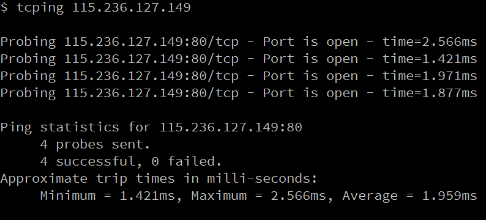

网络问题的三板斧
Contents
编译参考：http://www.cyberciti.biz/tips/linux-network-diagnose-tools.html
吃饭不积极，网络有问题。
ping那个ip
直接ping那个ip，看看通不通。
如果直接ping ip是通的，但是ping域名不行，那么可能是dns server有问题。
这个时候就需要看一看 /etc/resolv.conf 这个文件
|
|
输出示例
|
|
这个里面就是dns server的ip。
直接ping一下dns server。看看dns server是否正常，有没有挂掉。或者把公共服务的dns 域名加入。比如 114.114.114.114，或者阿里的 223.5.5.5。
还有一种可能，ping不通是因为服务器管理员吧icmp应答关掉了。这个时候可以试试tcping。

使用 traceroute 试试
如果完全ping不同服务器，那么试试traceroute这个命令。它能提供从你这一端，到服务器之间详细的信息。你可以看到到底是那个网关路由挂了。
|
|
当然，现在更好的工具是 mtr。但是一般服务器上都没有装，要先手工装一下。它结合了 traceroute 和 ping的功能。并且是动态的。
看看默认的路由/网关ip
如果traceroute 结果是都不能到你自己这边的网关，那么大概是路由没设置好。
使用这个命令
|
|
或者
|
|
获取到ip地址了吗
接下来排查的一个点可以考虑是否从dhcp服务器获取到正确的ip地址。很有可能网管改了dhcp服务器或者是ip路由啥的。那么重启网络设备，重新刷一下可能可以解决：
|
|
|
|
debian系统
|
|
网线接口，电源
如果还有问题，那么看看这个通路中，是不是有网线接口没插好，电源没插上。
这边还有个段子，微软的技术支持说，大部分打电话过来反应网络不通的客户，到最后很多都是网线没插好，但是你要直接跟他们说你去看看是不是网线没插好，客户肯定会说，“怎么可能，我怎么可能会犯这么低级的错误！”其实这些人就是犯了这么低级的错误，但是顾客是上帝啊，所以你要说，“可能是接触不好，你把网线先拔下来，再插上去试试。”这样既解决了问题，又照顾了客户的面子。
查看防火墙的日志
到了这一步，那么再看看防火墙的日志吧。也许是因为防火墙的问题。可以先关掉防火墙，重复上面几步，如果问题解决了，那么就是防火墙的原因，把你的主机加入白名单吧。
|
|
据说线下环境默认镜像把防火墙都打开了。
|
|
检查端口
是否把默认端口改了？常用的端口如下：
|
|
但是为了安全，有时候会把ssh默认端口改掉，然后死活连不上去。
这一步可以使用telnet
|
|
如果看到 connection refused，那么是因为端口没有开启。
可以直接登录远端的云主机
这种情况一般是通过私有网登录云主机，挂了一个外网port，发现这个port不起作用。
这个时候排查的一般思路是
|
|
看看走的哪个路由，路由是否推进路由表。
|
|
把eth0先卸掉，只能走外网网卡，在ping一下114.114.114.114.
重启网络设备。
抓包
这是最后一步，上抓包工具，看看具体是啥原因导致网络不通。
可以利用wireshark，tcpdump等。
Author smasterfree
LastMod 2017-09-24